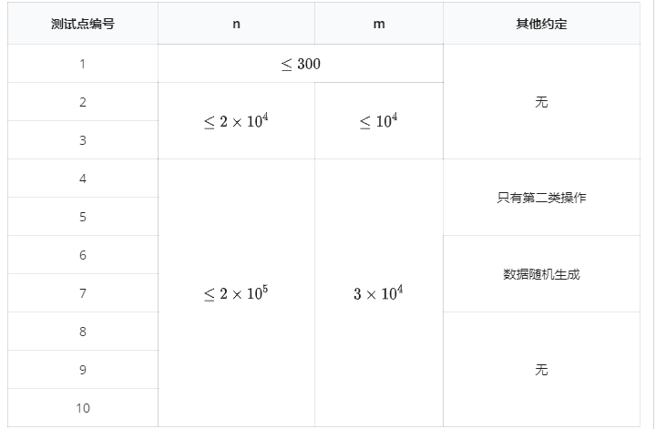

猪小侠最近学习了字符串相关理论，现在他遇到了这样一个题：
维护一个动态字符串 $s[1..n]$，字符串的字符集是所有 $|x| ≤ 10^9$ 的整数。要求支持两个操作：
第一行两个非负整数 $n, q$。
接下来一行包含 $n$ 个正整数，表示初始时的字符串。
接下来 $q$ 行，每行为 $1$$l$$r$$d$或$2$$l$$r$，分别表示两种操作。
对于所有的查询操作按顺序输出答案。
5 5 3 2 1 4 3 2 1 5 1 2 4 2 2 1 5 1 2 5 1 2 1 5
3 5 1
【数据范围与提示】

对于 $100\%$ 的数据，$1 ≤ l ≤ r ≤ n$，$|d| ≤ 10^3$，$|s_i| ≤ 10^8$。
注意，$6$ 和 $7$ 两个测试数据在随机生成时，$s_i$ 在 $[0, 1]$ 中随机，$d$ 在 $±1$ 中随机。操作种类和操作区间都是等概率随机的。
 Comet OJ
Comet OJ